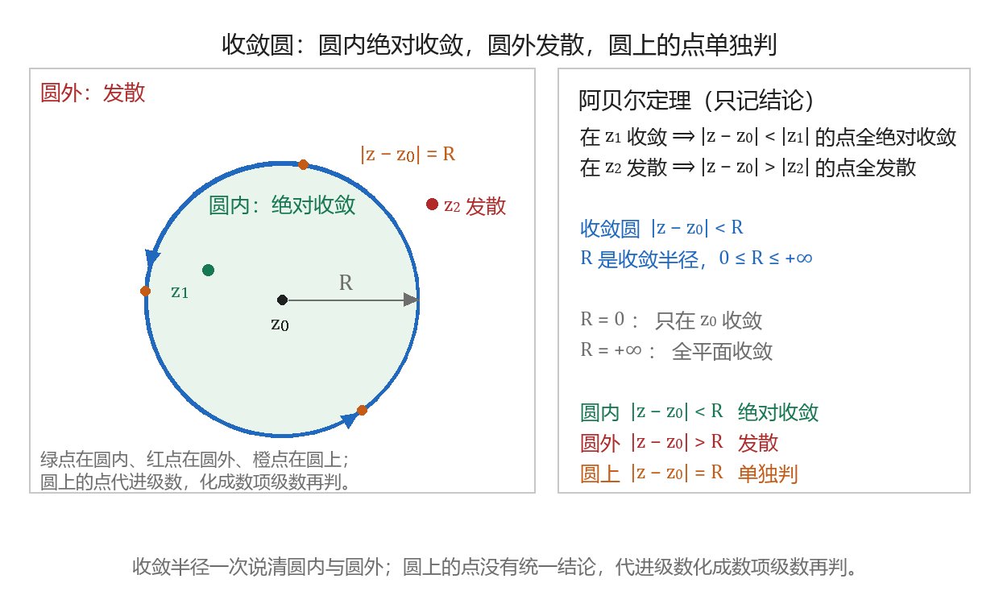
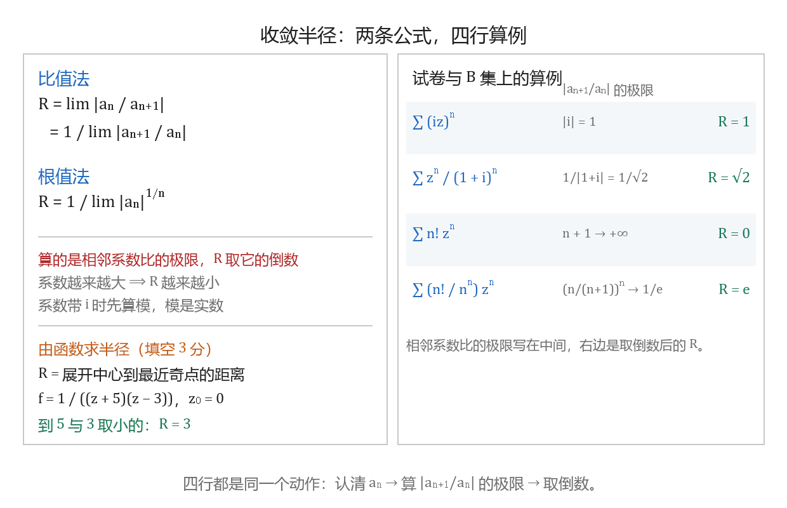

幂级数与收敛半径
本节目标：能求出幂级数的收敛半径并判定复数项级数收敛。
卷面怎么考
本课在公开试卷上落在填空与选择，每题 3 分，题型两条：判一个复数项级数收不收敛，算一个幂级数的收敛半径。
- 填空（3 分）：2023 年 B 卷第 3 题给 f(z)=\frac{1}{(z+5)(z-3)}，问它在 z_0=0 处展开的幂级数的收敛半径，答案是 3。
- 选择（3 分）：2022 年 A 卷问 \sum(iz)^n 的收敛半径（答案 1）；2022 年 B 卷与 2023 年 B 卷各问一处 \sum\frac{z^n}{(1+i)^n} 型的收敛半径（答案 \sqrt2）；2023 年 A 卷问 \sum\frac{n!}{n^n}z^n 的收敛半径（答案 e）。
- 选择（3 分）：2022 年 B 卷问「幂级数在其收敛圆周上」会怎样，四个选项里取「可能处处收敛也可能有发散的点」。
- B 集习题的 4.1 复数项级数、4.2 幂级数两个题组用同一批动作：判收敛、求半径、判边界。西建大卷的填空还多问一层：给「在 z=4 收敛、在 z=2+2i 发散」，问收敛半径的范围与收敛域。
洛朗展开属于下一课，本课到收敛半径与收敛圆为止。
唤醒：数项级数怎么判
级数 \sum u_n 收敛，指部分和 S_n=u_1+u_2+\cdots+u_n 当 n\to\infty 时有极限。高等数学里判这件事用得最多的是两条，都只看相邻两项的比值或第 n 项的模：
\rho<1 时级数收敛（并且绝对收敛），\rho>1 时发散，\rho=1 时这两条给不出结论。前一条叫比值法（达朗贝尔判别法），后一条叫根值法（柯西判别法）。另加一个几何级数备用：\sum q^n 在 |q|<1 时收敛、和为 \frac{1}{1-q}，在 |q|\ge 1 时发散。本课要用的就这三样。
复数项级数的收敛
设 z_n=a_n+ib_n，a_n 与 b_n 为实数。级数 \sum z_n 的收敛按部分和 \sum_{k=0}^{n}z_k 定义，判别可以整个搬到实级数上：\sum z_n 收敛，当且仅当 \sum a_n 与 \sum b_n 都收敛。实部与虚部两列同时收敛，复数项级数才收敛。
B 集 4.1 的选择题直接考这一条，三个选项分别是「\sum a_n 收敛」「\sum b_n 收敛」「两者同时收敛」，取第三个。
取模之后 \sum|z_n| 是正项级数，回到上一段的比值法与根值法。\sum|z_n| 收敛时称 \sum z_n 绝对收敛，此时 \sum z_n 一定收敛，并且重新排列各项所得的和不变；收敛而不绝对收敛的情形叫条件收敛。
例：\sum_{n=0}^{\infty}\frac{(3+5i)^n}{n!}。记 z_n=\frac{(3+5i)^n}{n!}，
级数绝对收敛。
例：\sum_{n=0}^{\infty}\frac{(6+5i)^n}{8^n} 是公比 q=\frac{6+5i}{8} 的几何级数，|q|=\frac{\sqrt{61}}{8}\approx 0.976<1，级数收敛，并且绝对收敛。
通项趋于零是级数收敛的必要条件。\sum i^n 的通项只在 \pm1,\pm i 之间取值，不趋于零，级数发散。这一条判收敛圆边界时还要用。
阿贝尔定理与收敛圆
把数项级数换成含参数的级数 \sum a_n z^n，收敛性就依赖 z 落在平面上的位置。阿贝尔定理说的是这种依赖只有一种形状。本课程只取结论，不作证明：
- 若 \sum a_n z_1^n 在 z_1\ne 0 处收敛，则对满足 |z|<|z_1| 的每个 z，级数都绝对收敛；
- 若 \sum a_n z_2^n 在 z_2 处发散，则对满足 |z|>|z_2| 的每个 z，级数都发散。
于是收敛点的集合是一个开圆盘，圆外的点全部发散。对幂级数 \sum_{n=0}^{\infty}a_n(z-z_0)^n，这个圆盘写成
称为幂级数的收敛圆，R 称为收敛半径，取值 0\le R\le+\infty。R=0 时级数只在 z_0 收敛；R=+\infty 时级数在整个复平面上收敛。
| 点的位置 | 结论 | 卷面上怎么写 |
|---|---|---|
| \vert z-z_0\vert<R | 绝对收敛 | 和函数在这里解析，可以逐项求导与积分 |
| \vert z-z_0\vert>R | 发散 | 通项不趋于零，直接写发散 |
| \vert z-z_0\vert=R | 没有统一结论 | 把这个点代进级数，化成数项级数单独判 |
展开中心要看清：\sum a_n(z-z_0)^n 的圆以 z_0 为心，\sum a_n z^n 的圆以 0 为心。
B 集 4.2 第 6 题第 (1) 问：级数 \sum a_n(z-1)^n 在 z=3 发散，问它必在哪个点发散。由阿贝尔定理，|z-1|>|3-1|=2 的点全部发散，z=-2 满足 |{-2}-1|=3>2，所以取 z=-2；z=2 满足 |2-1|=1，它与圆心的距离小于 2，落在圆内还是圆外要看 R 取多大，由已知条件定不下来。
同一题组第 8 题的填空把两个已知点一起给出来：级数 \sum a_n(z-2)^n 在 z=4 收敛、在 z=2+2i 发散，求 R 的范围与收敛域。收敛点给出下界，发散点给出上界：
收敛域是 |z-2|<R，其中 2\le R\le 2\sqrt2。

assets/img/gen/幂级数-收敛圆-圆内圆外与边界-本机-01.py），许可：本项目自产）收敛半径怎么算
半径由系数定，两条公式都只用 a_n：
前一条叫比值法，后一条叫根值法。两条与数项级数那两条是同一件事：把 u_n 换成 a_n z^n 之后 z 的幂被约掉，剩下的只有系数。极限存在时两条给出同一个 R。
比值法先算的是 \left|\frac{a_{n+1}}{a_n}\right| 的极限。这个数大于 1 表示系数在变大，半径就应当小于 1；把它直接当 R 写下去，答案整体反了。写完代一个数自查：系数越大 R 越小，\sum n!z^n 这种系数猛涨的级数，R 应当是 0。
四个算例，都来自试卷：
| 级数 | \left\vert\frac{a_{n+1}}{a_n}\right\vert 的极限 | R |
|---|---|---|
| \sum (iz)^n | \vert i\vert=1 | 1 |
| \sum \frac{z^n}{(1+i)^n} | \frac{1}{\vert 1+i\vert}=\frac{1}{\sqrt2} | \sqrt2 |
| \sum n!z^n | n+1\to+\infty | 0 |
| \sum \frac{n!}{n^n}z^n | \left(\frac{n}{n+1}\right)^n\to\frac{1}{e} | e |
第二行对应 2022 年 B 卷与 2023 年 B 卷的选择题，第四行对应 2023 年 A 卷的选择题。第二行也可以换个看法：\sum\frac{z^n}{(1+i)^n}=\sum\left(\frac{z}{1+i}\right)^n 是公比 \frac{z}{1+i} 的几何级数，|z|<|1+i|=\sqrt2 时收敛，半径同样是 \sqrt2。系数带 i 时先算模，模是实数，比值法照常用的办法走。
第四行的极限 \left(\frac{n}{n+1}\right)^n=\frac{1}{(1+1/n)^n}\to\frac1e，取倒数得 e。

assets/img/gen/幂级数-收敛半径-比值法与算例-本机-02.py），许可：本项目自产）由奇点定半径
函数已经给出、要在某点展开成幂级数时，半径不必算系数：它等于展开中心到最近一个奇点的距离。这里的奇点指使函数没有定义的点，也就是分母为零的点。
例（2023 年 B 卷填空，3 分）：f(z)=\frac{1}{(z+5)(z-3)} 在 z_0=0 处展开。分母为零的点是 -5 与 3，到 0 的距离分别是 5 与 3，取小的，R=3。
这一条下一课还要用：展开式只在圆内成立，最近的那个奇点正好落在圆上。
缺项与换元
系数里有大量 0 时，比值法要按非零的那几项看。\sum_{n=0}^{\infty}\frac{z^{2n}}{2^n} 只有偶次项，直接当几何级数看最省事：
得 R=\sqrt2。若按 a_n 去写，a_{2n}=\frac{1}{2^n}、a_{2n+1}=0，相邻系数比在 0 与 \frac12 之间跳，比值法失效；这种情形改用根值法，或者像上面这样先换元。
换元还有一种考法（B 集 4.2 第 8 题第 (3) 问）：设 \sum c_n z^n 的收敛半径为 R，求 \sum c_n(2z-1)^n 的收敛半径。把它写成 \sum c_n2^n\left(z-\frac12\right)^n，中心移到 \frac12，系数是 c_n2^n，相邻系数比乘以 2：
半径就除以 2：收敛半径是 \frac{R}{2}，收敛圆是 \left|z-\frac12\right|<\frac{R}{2}。
圆上的点单独判
收敛圆边界上 |z-z_0|=R 的点，阿贝尔定理不给结论。判法是代进去：z 取定之后级数变成数项级数，按实级数的办法判。
三个例子，收敛半径都是 1：
- \sum z^n：|z|=1 时 |z^n|=1，通项不趋于零，整个边界处处发散。
- \sum\frac{z^n}{n}：z=-1 时得交错级数 \sum\frac{(-1)^n}{n}，收敛；z=1 时得调和级数 \sum\frac1n，发散。同一个圆的边界上，有的点收敛、有的点发散。
- \sum\frac{z^n}{n^2}：|z|=1 时 \left|\frac{z^n}{n^2}\right|=\frac{1}{n^2}，而 \sum\frac{1}{n^2} 收敛，整个边界绝对收敛。
2022 年 B 卷那道选择题问的是这三种情形合起来的结论，四个选项里取「可能处处收敛也可能有发散的点」。B 集 4.2 判断题第 (1) 问「每一个幂级数在它的收敛圆周上处处收敛」与它同题，答案是错。
判边界落到三个动作上：把点代进去 → 先看通项是否趋于零 → 再看能否用 p 级数 \sum\frac{1}{n^p}（p>1 收敛、p\le 1 发散）或交错级数判别。
圆内的分析性质
收敛圆内幂级数可以当一个函数来用。设 \sum a_n(z-z_0)^n 的收敛半径为 R>0，和函数记为 f(z)，则在 |z-z_0|<R 内：
- f 解析；
- 可以逐项求导：f'(z)=\sum_{n=1}^{\infty}n a_n(z-z_0)^{n-1}，新级数的收敛半径仍是 R；
- 可以逐项积分：\int f(z)\,dz=\sum_{n=0}^{\infty}\frac{a_n}{n+1}(z-z_0)^{n+1}+C，收敛半径仍是 R；
- 系数由 f 定死：a_n=\frac{f^{(n)}(z_0)}{n!}。
第二条与第三条合起来一句话：圆内随便求导、随便积分，半径不动。反复求导仍不改变半径，所以 f 在圆内有任意阶导数，圆内没有奇点，奇点只能落在圆上或圆外。B 集 4.2 判断题第 (4) 问「每一个幂级数的和函数在收敛圆内可能有奇点」，答案是错。
第四条下一课直接用：泰勒展开的系数就是 \frac{f^{(n)}(z_0)}{n!}。
逐项求导给一个例子。由 \frac{1}{1-z}=\sum_{n=0}^{\infty}z^n（|z|<1）两边求导得
右边级数的半径仍是 1，与原来一致。
练习：三个半径
前三个半径写在纸上，每题两行：先写 \left|\frac{a_{n+1}}{a_n}\right| 的极限，再写 R。
- \sum(iz)^n，答 R=1。
- \sum\frac{z^n}{(1+i)^n}，答 R=\sqrt2。
- \sum n!z^n，答 R=0。
第 4 步去边界试一个点。\sum\frac{z^n}{n} 在 z=-1 与 z=1 各变成什么级数，哪一个收敛，写一句话。
第 5 步敲一条命令核对：把这行存成 series.py 跑一次，两行数立刻出来。
for z in (-1, 1):
print(z, sum(z**n / n for n in range(1, 200001)))z = -1 那行给出 -0.69314\ldots（\ln 2 的相反数），收敛；z = 1 那行给出 12.78\ldots，把上限 200001 改大，这个数还会继续变大，级数发散。同一个收敛圆，边界上两个点的结论相反。
带走的公式卡
| 要写的东西 | 写法 |
|---|---|
| 复数项级数收敛 | 实部、虚部两列数项级数同时收敛 |
| 绝对收敛 | \sum\vert z_n\vert 收敛，此时原级数必收敛 |
| 阿贝尔定理 | 一点收敛则圆内绝对收敛；一点发散则圆外发散 |
| 收敛半径（比值法） | R=\lim\left\vert\frac{a_n}{a_{n+1}}\right\vert，即相邻系数比极限的倒数 |
| 收敛半径（根值法） | R=1/\lim\sqrt[n]{\vert a_n\vert} |
| 由奇点定半径 | 展开中心到最近奇点的距离 |
| 圆内 | 和函数解析，可逐项求导与积分，半径不变 |
| 圆上 | 没有统一结论，代进级数化成数项级数再判 |
- 李君、于非非《复变函数与积分变换》§3.1 复数项级数、§3.2 幂级数
- 合肥工业大学期末试卷（含答案与逐题分值）
- 复变积分解题集 B 集习题（西安建筑科技大学）